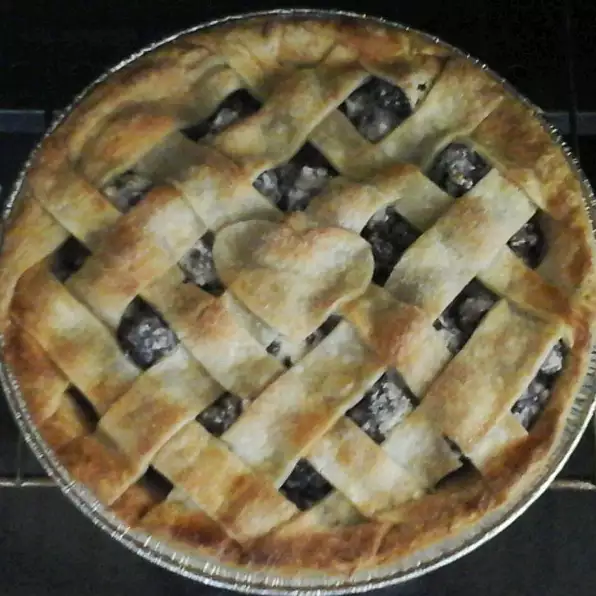

Odins Recipes
Odins Recipes
Brigid's Blackberry Pie

Blackberries are a plant sacred to the Irish Goddess Brigid and the Norse thunder God Thor! This simple recipe will bring you back to the Old Religion in no time!
- Prep: 15 mins
- Cook: 1 hr
- Total: 1 hr 15 mins
- Servings: 8 people; 1 God
- Yield: 1 - 9 inch pie
Ingredients
- 1 (425g) package pastry for a 9 inch double crust pie
- 800g fresh blackberries
- 300g white sugar
- 60g all-purpose flour
- ¼ teaspoon salt
- 1 tablespoon butter
Directions
- Preheat the oven to 165 degrees C (325 degrees F).
- Line a 9 inch deep dish pie pan with one of the crusts.
- Place the blackberries in a large bowl.
- Stir together the sugar, flour, and salt & sprinkle over the berries, tossing to coat.
- Pour the coated berries into the pie crust & dot with butter.
- Place the other pie crust over the top, and secure to the bottom crust by pressing with a fork, or fluting with your fingers. Cut a design in the top crust with a sharp knife to vent steam.
- Bake for 1 hour in the preheated oven, or until the top crust is browned.
- Let cool to almost room temperature before serving to allow the filling to set.
- (Optional) Serve with vanilla ice cream.
Nutritional Information
Per Serving: 464 calories; protein 4.8g; carbohydrates 72.6g; fat 18g; cholesterol 3.8mg; sodium 336.8mg.